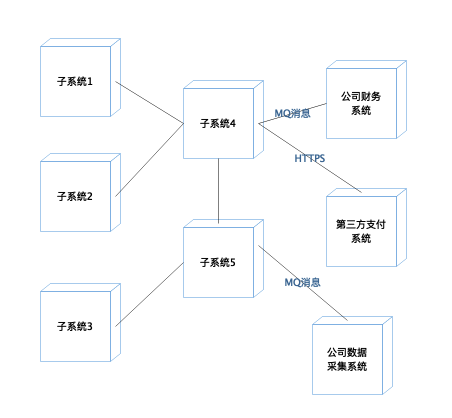
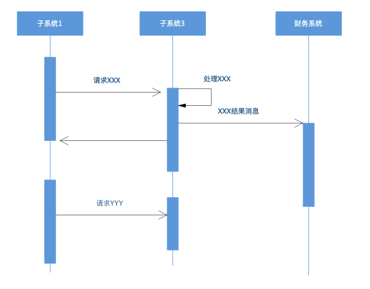
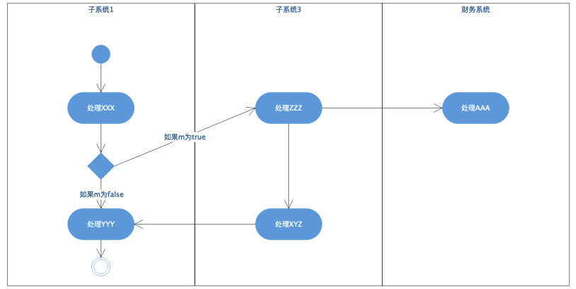
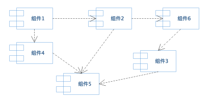
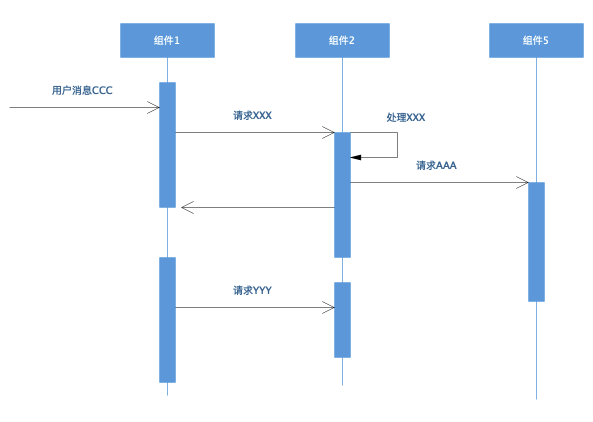
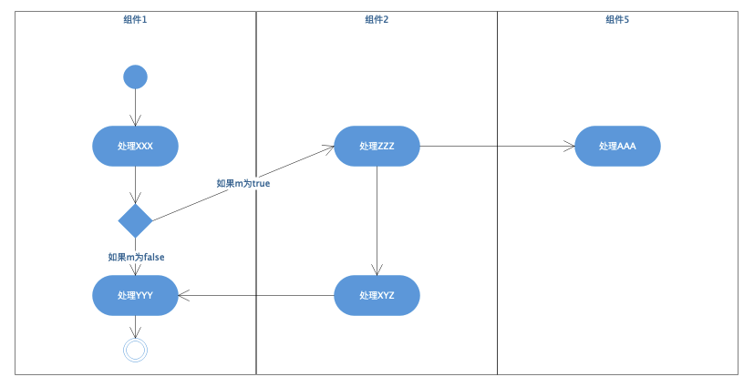
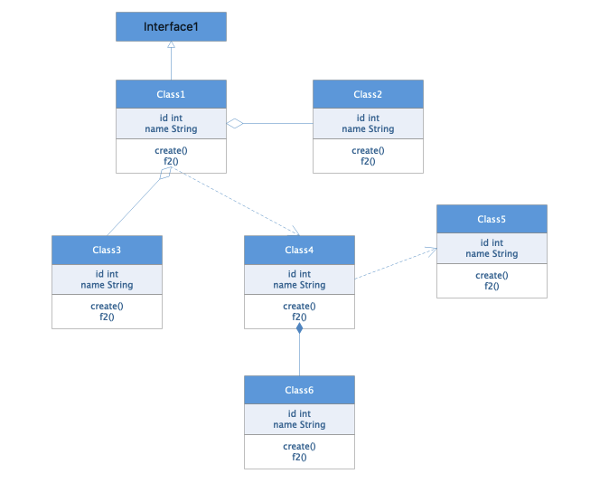
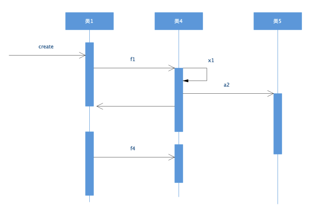
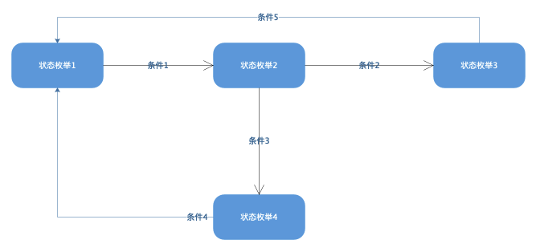

- 00 开篇词 掌握软件开发技术的第一性原理.md
- 01 程序运行原理：程序是如何运行又是如何崩溃的？.md
- 02 数据结构原理：Hash表的时间复杂度为什么是O(1)？.md
- 03 Java虚拟机原理：JVM为什么被称为机器（machine）？.md
- 04 网络编程原理：一个字符的互联网之旅.md
- 05 文件系统原理：如何用1分钟遍历一个100TB的文件？.md
- 06 数据库原理：为什么PrepareStatement性能更好更安全？.md
- 07 答疑 Java Web程序的运行时环境到底是怎样的？.md
- 07 编程语言原理：面向对象编程是编程的终极形态吗？.md
- 08 软件设计的方法论：软件为什么要建模？.md
- 09 软件设计实践：如何使用UML完成一个设计文档？.md
- 10 软件设计的目的：糟糕的程序员比优秀的程序员差在哪里？.md
- 11 软件设计的开闭原则：如何不修改代码却能实现需求变更？.md
- 12 软件设计的依赖倒置原则：如何不依赖代码却可以复用它的功能？.md
- 13 软件设计的里氏替换原则：正方形可以继承长方形吗？.md
- 14 软件设计的单一职责原则：为什么说一个类文件打开最好不要超过一屏？.md
- 15 软件设计的接口隔离原则：如何对类的调用者隐藏类的公有方法？.md
- 16 设计模式基础：不会灵活应用设计模式，你就没有掌握面向对象编程.md
- 17 设计模式应用：编程框架中的设计模式.md
- 18 反应式编程框架设计：如何使程序调用不阻塞等待，立即响应？.md
- 19 组件设计原则：组件的边界在哪里？.md
- 20 答疑 对于设计模式而言，场景到底有多重要？.md
- 20 领域驱动设计：35岁的程序员应该写什么样的代码？.md
- 21 分布式架构：如何应对高并发的用户请求.md
- 22 缓存架构：如何减少不必要的计算？.md
- 23 异步架构：如何避免互相依赖的系统间耦合？.md
- 24 负载均衡架构：如何用10行代码实现一个负载均衡服务？.md
- 25 数据存储架构：如何改善系统的数据存储能力？.md
- 26 搜索引擎架构：如何瞬间完成海量数据检索？.md
- 27 微服务架构：微服务究竟是灵丹还是毒药？.md
- 28 高性能架构：除了代码，你还可以在哪些地方优化性能？.md
- 29 高可用架构：我们为什么感觉不到淘宝应用升级时的停机？.md
- 30 安全性架构：为什么说用户密码泄漏是程序员的锅？.md
- 31 大数据架构：大数据技术架构的思想和原理是什么？.md
- 32 AI与物联网架构：从智能引擎到物联网平台.md
- 33 区块链技术架构：区块链到底能做什么？.md
- 33 答疑 互联网需要解决的技术问题是什么？.md
- 34 技术修炼之道：同样工作十几年，为什么有的人成为大厂架构师，有的人失业？.md
- 35 技术进阶之道：你和这个星球最顶级的程序员差几个等级？.md
- 36 技术落地之道：你真的知道自己要解决的问题是什么吗？.md
- 37 技术沟通之道：如何解决问题？.md
- 38 技术管理之道：你真的要转管理吗？.md
- 38 答疑 工作中的交往和沟通，都有哪些小技巧呢？.md
- 加餐 软件设计文档示例模板.md
- 结束语 期待未来的你，成为优秀的软件架构师.md
加餐 软件设计文档示例模板
在[第9篇文章]中，我讲了每种UML模型图的画法，以及这些画法分别适用于什么样的设计阶段，我们也可以将不同阶段输出的模型图放在一个文档中，对每张模型图配以适当的文字说明，构成一篇设计文档。
对于规模不太大的软件系统，我们可以将概要设计文档和详细设计文档合并成一个设计文档。这一篇文章中，我会展现一个设计文档示例模板，你可以参考这个模板编写你的设计文档。
文档开头是设计概述，简单描述业务场景要解决的核心问题领域是什么。至于业务场景，应该在专门的需求文档中描述，但是在设计文档中，必须要再简单描述一下，以保证设计文档的完整性，这样，即使脱离需求文档，阅读者也能理解主要的设计。
此外，在设计概述中，还需要描述设计的非功能约束，比如关于性能、可用性、维护性、安全性，甚至开发和部署成本方面的设计目标。
然后就是具体的设计了，第一张设计图应该是部署图，通过部署图描述系统整个物理模型蓝图，包括未来系统长什么样。
如果系统中包含几个子系统，那么还需要描述子系统间的关系，可以通过子系统序列图，子系统活动图进行描述。
子系统内部的最顶层设计就是组件图，描述子系统由哪些组件组成，不同场景中，组件之间的调用序列图是什么样的。
每个组件内部，需要用类图进行建模描述，对于不同场景，用时序图描述类之间的动态调用关系，对于有复杂状态的类，用状态图描述其状态转换。
具体示例模板如下：
1 设计概述
……系统是一个……的系统，是公司……战略的核心系统，承担着公司……的目标任务。
1.1 功能概述
系统主要功能包括……，使用者包括……。
1.2 非功能约束
……系统未来预计一年用户量达到……，日订单量达到……，日PV达到……，图片数量达到 ……。
- 查询性能目标：平均响应时间<300ms，95%响应时间<500ms，单机TPS>100；
- 下单性能目标：平均响应时间<800ms，95%响应时间<1000ms，单机TPS>30；
- ……性能目标：平均响应时间<800ms，95%响应时间<1000ms，单机TPS>30；
- 系统核心功能可用性目标：>99.97%；
- 系统安全性目标：系统可拦截…… 、……、……攻击，密码数据散列加密，客户端数据HTTPS加密，外部系统间通信对称加密；
- 数据持久化目标：>99.99999%。
2 系统部署图与整体设计
系统上线时预计部署……台物理机，……个子系统，和公司……系统交互，和外部第三方……个系统交互。
2.1 系统部署图
 子系统1的功能职责为……，部署……台服务器，依赖……和……子系统，实现 ……功能。
子系统2参照子系统1来写。
2.2 下单场景子系统序列图

- 下单时，子系统先发送……消息到子系统3，子系统3需要执行……完成……处理，然后发送……消息到财务系统，消息中包含……数据。
- 收到……的处理结果……后，子系统1发送……消息到……子系统2……。
2.3 退款场景子系统序列图
- 退款子系统先发送……消息到子系统3，子系统3需要执行……完成……处理，然后发送……消息到财务系统，消息中包含……数据。
- 收到……的处理结果……后，子系统1发送……消息到……子系统2……。
2.4 退款场景子系统活动图
 如图所示：
- 退款开始时，子系统1处理XXX，然后判断m的状态，如果m为真，请求子系统3处理ZZZ，如果m为假，子系统继续处理ZZZ并结束。
- 子系统3处理ZZZ后，一方面继续处理XYZ，一方面将……消息发送给财务通进行AAA处理。
- 子系统在处理完XYZ后，返回子系统继续梳理YYY，然后退款处理结束。
3 子系统1设计
子系统1的主要功能职责是……，其中主要包含了……组件。
3.1 子系统1组件图
 子系统1包含6个组件：
组件1的功能主要是……，需要依赖组件2完成……，是子系统1的核心组件，用户……请求主要通过组件1完成。
同样的，组件2也可以参照组件1来这样写。
3.1.1 场景A组件序列图
 对于场景A，首先组件1收到用户消息CCC，然后组件1调用组件2的XXX方法……。
3.1.2 场景B组件活动图
 在场景B中，首先组件收到……消息，开始处理……，然后判断……，如果为true，那么……，如果为false，那么……。
3.2 组件1设计
组件1的主要功能职责是……，其中主要包含了……类。
3.2.1 组件1 类图
 Class1实现接口Interface1，主要功能是……，Class1聚合了Class2和Class3，共同对外提供……服务，Class1依赖Class4实现……功能，Class4……。
3.2.2 场景A 类序列图
 在场景A中，当外部应用调用类1的create方法时，类1……。
3.2.3 对象1状态图
 对象1运行时有4种状态，初始状态是状态1，当条件1满足是，状态1转换为状态2，当条件3满足时，状态2转换为状态4……。
3.3 组件2设计
重复上面的格式。
4 子系统2设计
重复上面的格式。
© 2019 - 2023 Liangliang Lee. Powered by Vert.x and hexo-theme-book.